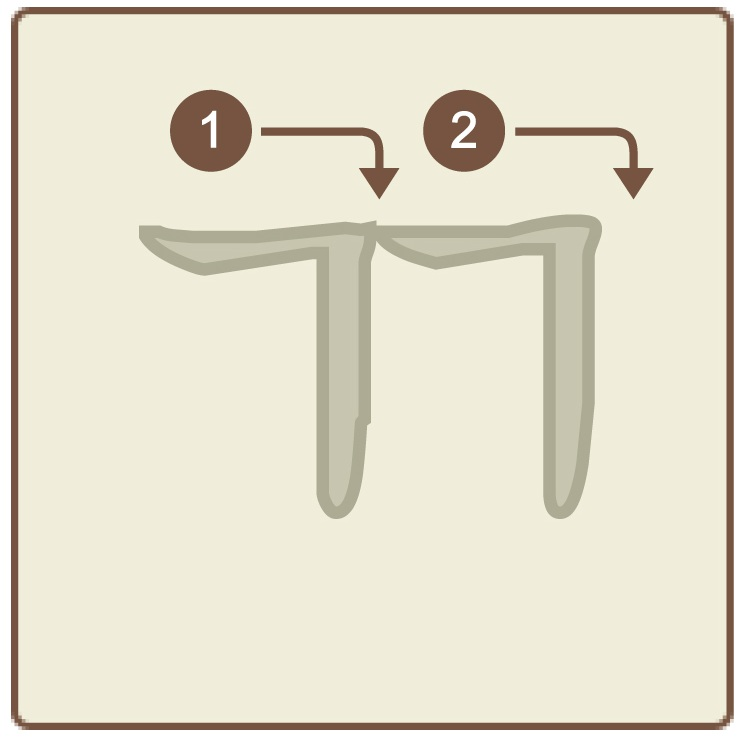
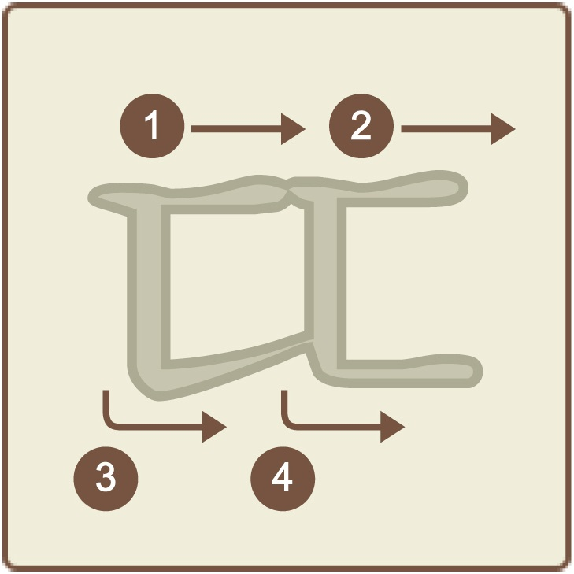
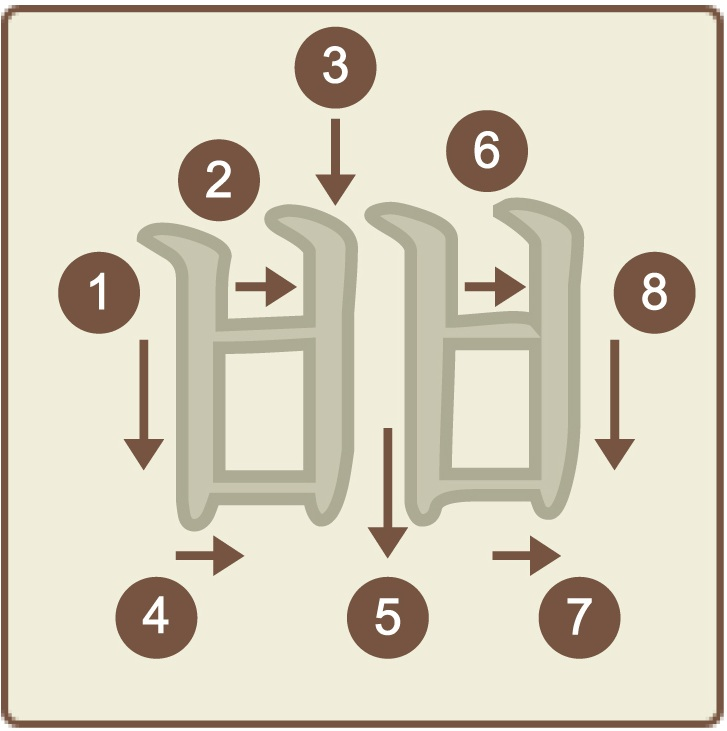
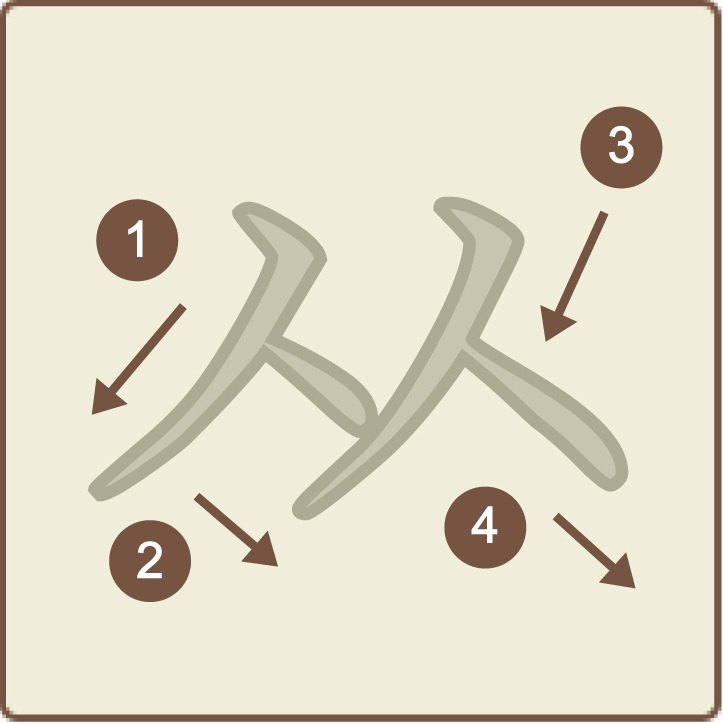
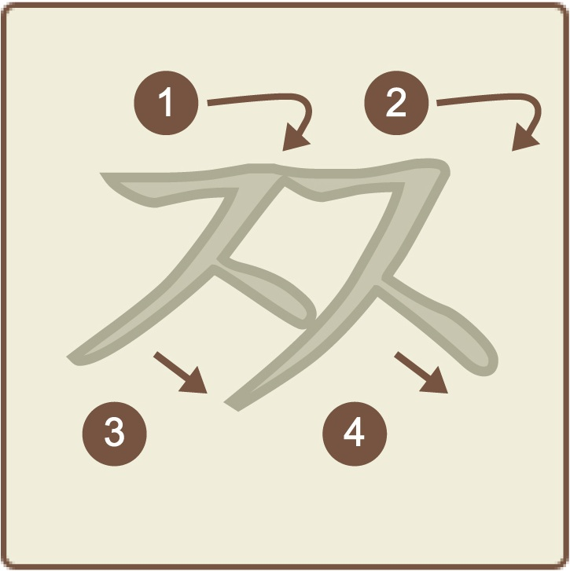

名前：サンキヨク
発音：[kk]
平音「ㄱ」音を二つ並べた文字です。 「すっかり」の「か」の発音に近いです。

名前：サンティグッ
発音：[tt]
平音「ㄷ」音を二つ並べた文字です。 「ㄷ」を、息を出さずに言う音です。

名前：サンビウップ
発音：[pp]
平音「ㅂ」音を二つ並べた文字です。 「ㅂ」を、息を出さずに言う音です。

名前：サンシオッ
発音：[ss]
平音「ㅅ」音を二つ並べた文字です。 「ㅆ」を、息を出さずに言う音です。
